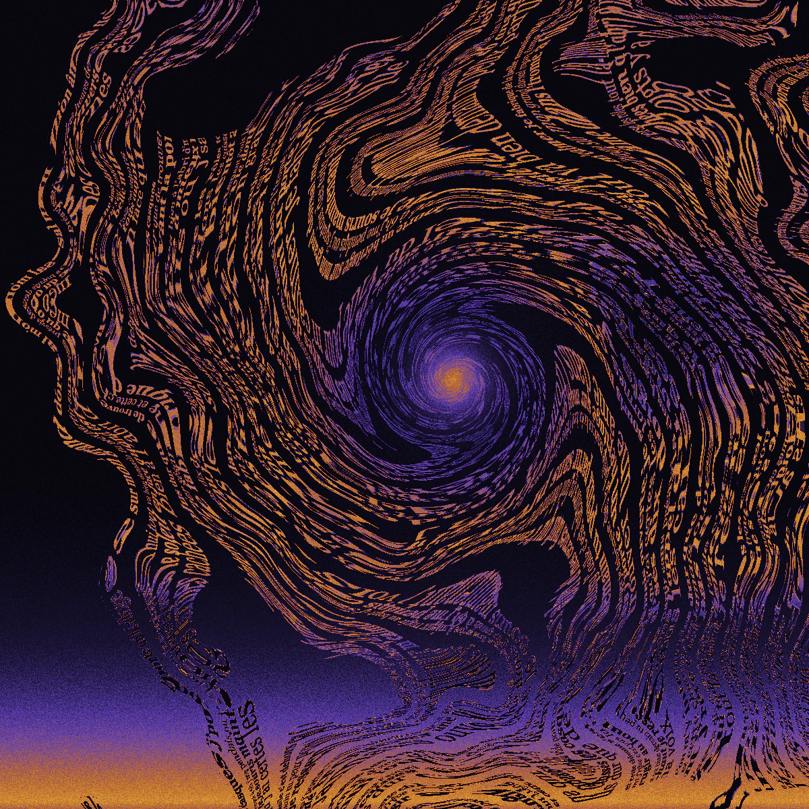

11 décembre 2026
pré-sauvegarder l’album
pré-sauvegarder l’album
spotify · apple
le site
le site
paroles · titres
ironsight
ironsight
soundcloud
youtube
youtube
les clips
spotify
spotify
tous les sons